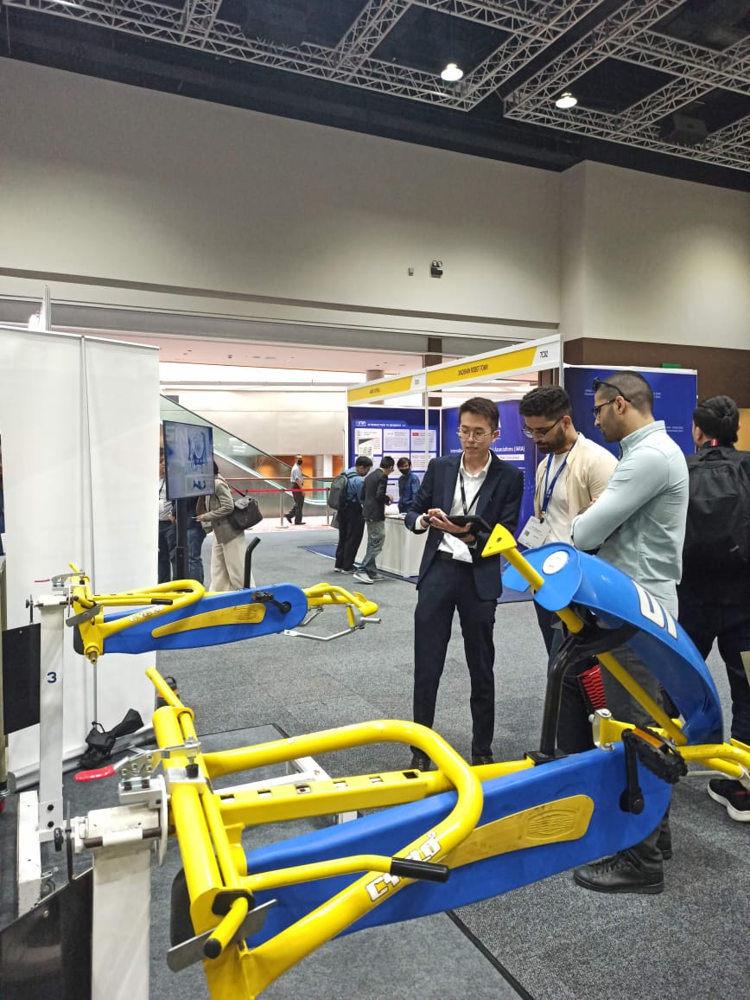
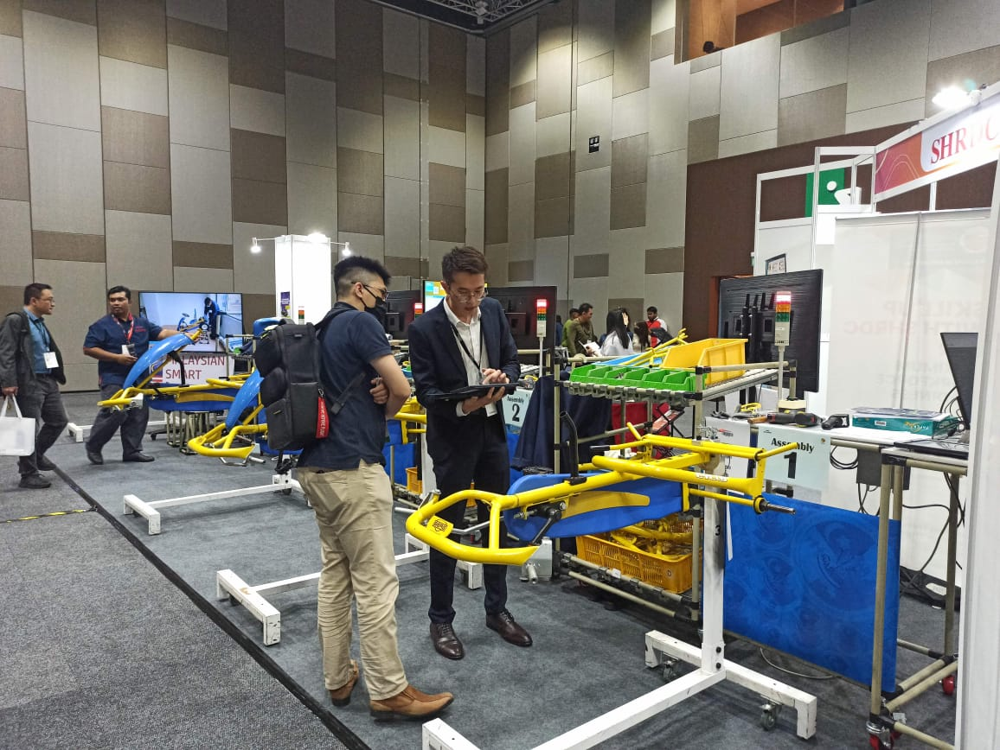
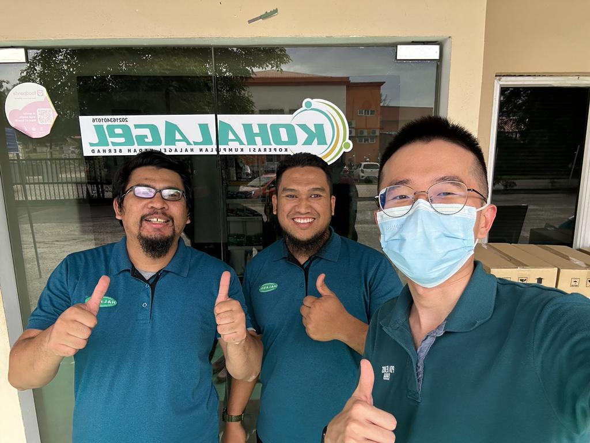
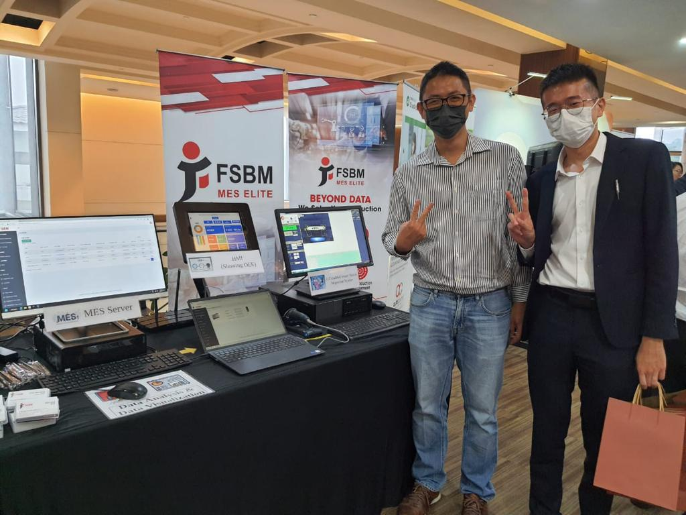
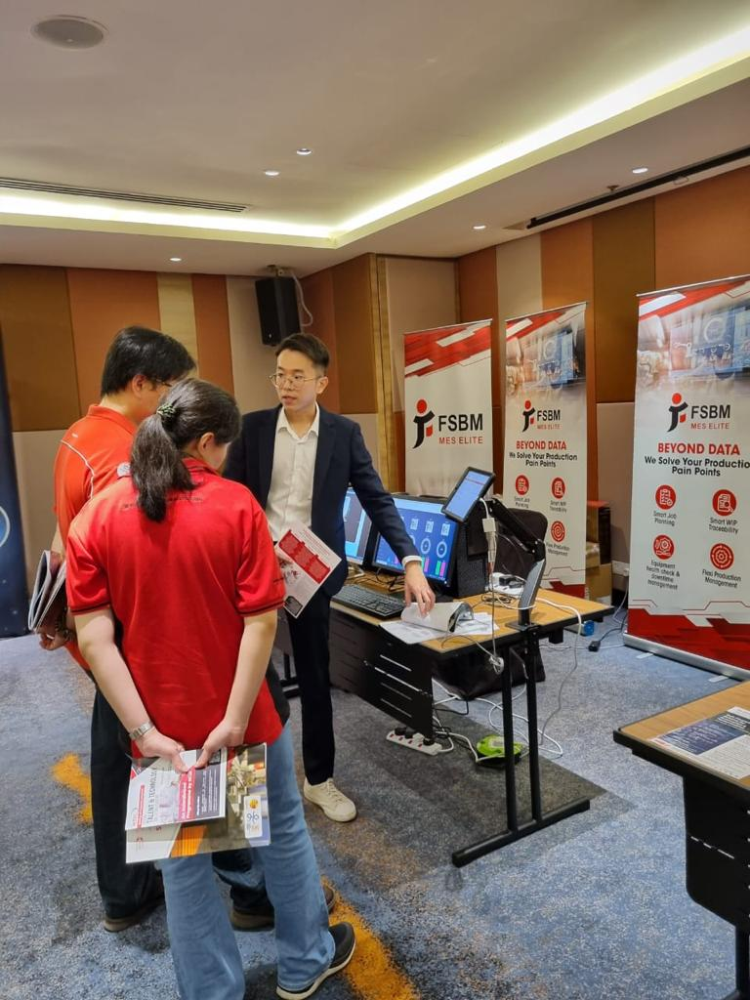

Automation and Engineering Solution Engineer
FSBM MES ELITE Sdn Bhd
Nov 2022 - Present (9 months)
Challenges and Action Taken
- Challenges 1: Communicating Technical Concept to Non-Technical Stakeholder
- Action Taken: Develop effective communication strategies that uses visual aids, chart and simple languages to explain tecnical concept. Draw wireframe with details.
- Action Taken: Conduct regular progress meetings with stakeholders to address questions and concerns promptly
- Challenges 2: Cross-Functional Collaboration
- Action Taken: Foster open communication channels and regular meetings with cross-functional teams to ensure a clear understanding of business requirements. Microsoft team.
- Action Taken: Be discipline to keep all stakeholders informed. Every Week upated project progress. Agile Project Mangement Practice.
- Challenges 3: Staying Updated with Advancements
- Action Taken: Participate in industry conferences, workshops, and webinars to stay informed about the latest trends and advancements. Take courses in Udemy
- Action Taken: Stay close with automation vendor, encouraged to experiment with new technologies. Linked In




